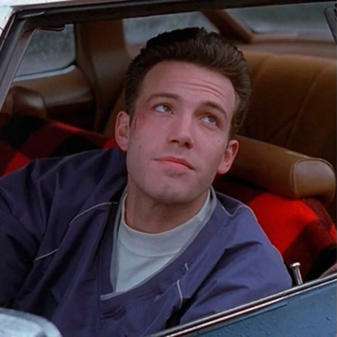

Good Will Hunting – Les personnages
Will Hunting
Will Hunting est le personnage principal du film. Il est doté d’un génie exceptionnel, mais souffre d’un profond mal-être émotionnel. Son intelligence contraste avec son comportement autodestructeur et violent.
Will rejette l’autorité et refuse les opportunités qui pourraient changer sa vie. Son parcours est avant tout un combat intérieur : accepter sa valeur personnelle et croire qu’il mérite le bonheur.
Sean Maguire

Sean Maguire est un psychologue marqué par la perte de sa femme. Contrairement aux autres thérapeutes, il adopte une approche humaine et sincère.
Il devient une figure paternelle pour Will et l’aide à comprendre que son passé ne définit pas son avenir. Leur relation repose sur la confiance et l’honnêteté.
Chuckie Sullivan
Chuckie est le meilleur ami de Will. Il représente la voix de la réalité et du bon sens.
Bien qu’il soit issu du même milieu que Will, il comprend que son ami a un potentiel unique. Ami loyal et franc, il pousse Will à réaliser son potentiel. Il montre que l’amitié peut être un moteur pour changer sa vie.
Skylar

Skylar est la petite amie de Will. Elle incarne l’ouverture, la confiance et la possibilité d’une vie différente.
Sa relation avec Will met en évidence la peur de l’engagement de ce dernier. Son personnage souligne l’importance d’oser s’ouvrir aux autres malgré les peurs.
Personnages secondaires
- Professeur Lambeau – Mentor académique de Will
- Les amis de Will – Représentation du milieu populaire
- Les thérapeutes – Opposition à Sean